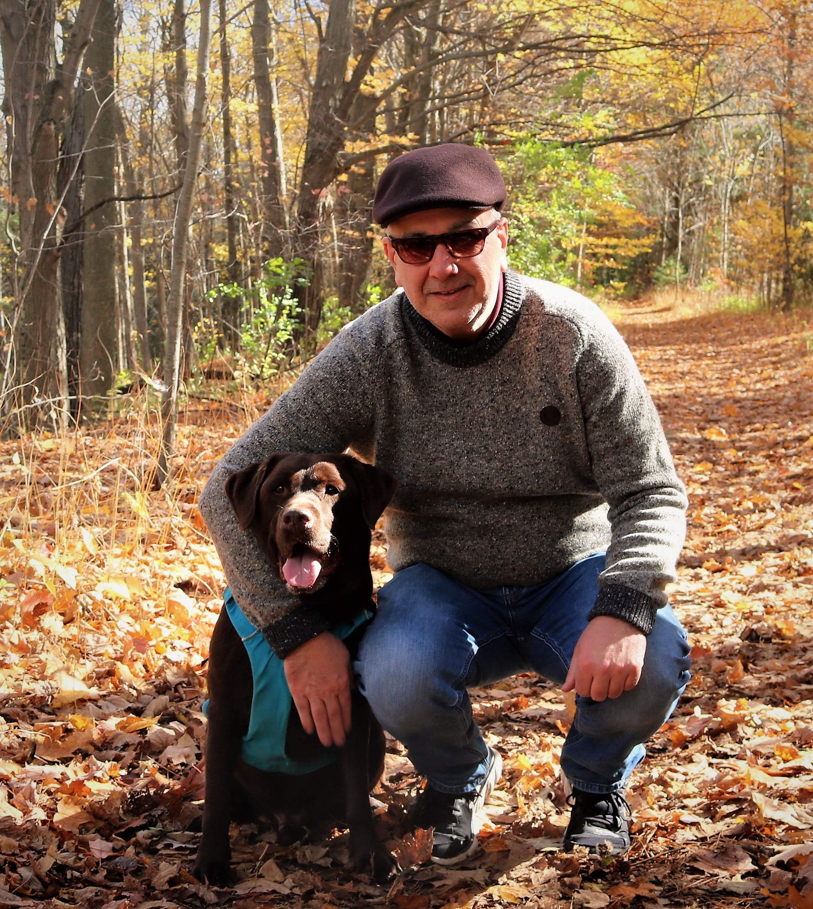

| All About Me! | |||||
|---|---|---|---|---|---|
Kelvin Xu ICS207-1A |
|||||
|
| Family | |
|---|---|
|
My immediate family's pretty small, as it consists of my mom, dad, sister,
and myself. I also have a dog named after the jazz artist, Dizzy Gillespie,
which my dad named. As a family, we often go out on walks together in the
wilderness on the weekends, which is a nice thing considering the amount
of time we are on our electronic devices these days.
My mom came from China, along with basically my whole family. She was a professional basketball player for the Shanghai National team, and started basketball at a young age. After having my sister for 10 years, they decided to move to Canada to find a better life, and to have me, as they couldn't in China due to the One Child Policy. As my sister has graduated from university and is now working, she doesn't live with the rest of us anymore, but she still comes over from time to time. My dog's name is Dizzy, and he's a 5 year old chocolate labrador. He lives a pretty good life, eat, sleep, get treats, sleep, repeat. We always take him out for long walks on the weekends near a river, or somewhere he can swim, as he loves the water. Most of my friends were those who I've met through the gifted program, and some even before that. Hopefully, even thought we go to different schools, we'll be able to keep in touch, and hopefully I'll meet new people to befriend in the near future. |
 |
Return to the top.